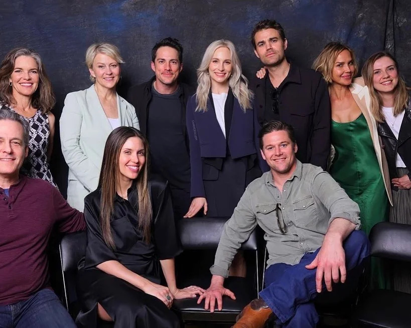

Meet the passionate individuals who bring Toasty Haven to life!
Our team is a dynamic blend of visionaries, creators, and innovators, each contributing their unique
expertise to shape the heart and soul of our brand.
From conceptualizing groundbreaking designs to perfecting the smallest details,
their dedication ensures that every toaster oven we create reflects unparalleled quality and excellence.
United by a shared commitment to innovation and a deep passion for our craft,
our team strives to deliver not just products but experiences that bring warmth, convenience,
and delight to your kitchen.
At Toasty Haven, it's the people behind the scenes who make all the difference.
Who We Are
Executives
The leadership that steers our company.
Our executives lead the way with unwavering vision, steadfast integrity, and a profound dedication
to excellence.
They are the driving force behind our mission, guiding the organization with a clear purpose
and a commitment to achieving the highest standards in everything we do.
With their leadership, they inspire innovation, foster collaboration, and empower every
team member to contribute their best.
Their strategic insights and forward-thinking approach shape the future of Toasty Haven,
ensuring we remain a trusted name synonymous with quality and innovation.
Marketing Team

Innovative marketers creating impact.
Our marketing team excels at crafting impactful campaigns that share the story of our
exceptional toaster ovens with the world.
Combining creativity, strategic insight, and a deep understanding of our customers,
they highlight the unique features and quality that set Toasty Haven apart.
From eye-catching advertisements to engaging digital content, their efforts create meaningful
connections and inspire trust in our brand.
Through innovative storytelling and targeted outreach, they ensure our message resonates far and wide,
bringing the warmth and convenience of Toasty Haven into kitchens everywhere.
Sales Representatives
Dedicated sales representatives connecting with customers.
Our customer relations team is dedicated to building meaningful connections with every customer,
ensuring they find the perfect product to meet their needs.
With a focus on personalized service and genuine care, they guide customers through their journey,
offering expert advice and tailored recommendations.
Their commitment to understanding and addressing individual preferences creates lasting relationships
built on trust and satisfaction.
At Toasty Haven, they'e more than just a support team—they're partners in helping customers bring
home the perfect addition to their kitchens.
Departments
Research and Development
Our R&D team works tirelessly to push the boundaries of innovation and enhance our toaster oven designs,
ensuring we remain at the forefront of market trends.
With a passion for excellence and a commitment to quality, they explore cutting-edge technologies,
test new ideas, and refine every detail to deliver products that exceed customer expectations.
Their relentless dedication drives the evolution of Toasty Haven, ensuring that each toaster oven
combines modern functionality, superior performance, and timeless design.
Customer Support
Our dedicated support team is committed to providing every customer with a seamless and satisfying experience,
from the moment of purchase to exceptional after-sales service.
With a focus on prompt assistance and personalized care, they address inquiries, resolve concerns,
and ensure that every interaction reflects our commitment to excellence.
Their unwavering dedication helps build trust and loyalty, making each customer's journey with
Toasty Haven as smooth and enjoyable as possible.
Product Testing
Our product testing department rigorously evaluates each toaster oven to ensure it meets the
highest standards of quality, performance, and safety.
With meticulous attention to detail, they conduct comprehensive tests to assess durability, functionality,
and compliance with safety regulations.
Their dedication to excellence guarantees that every product leaving Toasty Haven is not only reliable
but also crafted to deliver an exceptional user experience.
Through their unwavering commitment, they uphold the trust and confidence our customers place in our brand.
Employee Highlights
Employee of the Month
Caroline Forbes, recognized for exceptional customer service.
Caroline Forbes has truly gone above and beyond in assisting our customers,
consistently ensuring that every experience is memorable, positive, and exceeds expectations.
With a remarkable dedication to customer satisfaction, she offers personalized support,
going the extra mile to resolve any concerns and make each interaction special.
Her commitment to excellence and her warm, attentive approach make her an invaluable part of our team,
fostering strong relationships and ensuring our customers always feel valued and well taken care of.